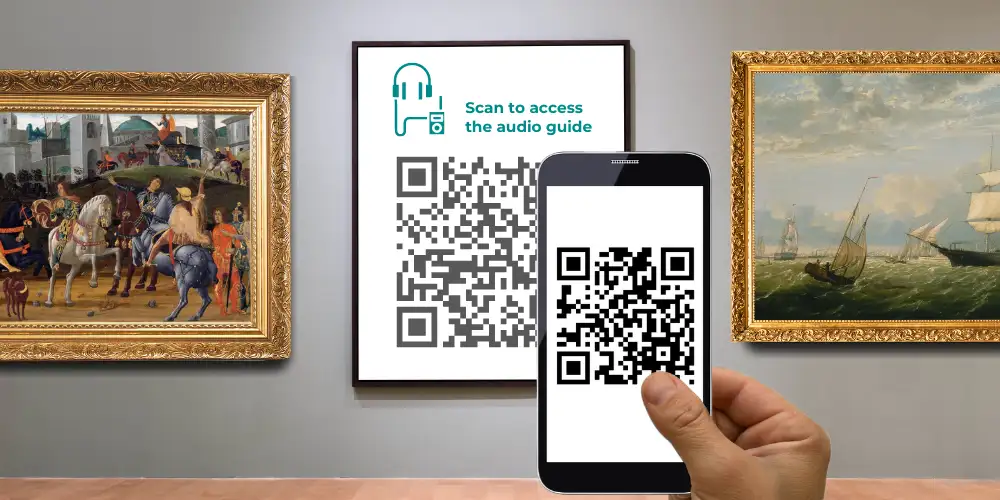

L'équipe Nubart
Développement informatique
Audioguides QR pour musées : ce qu'il faut vérifier avant de signer un contrat
Vu de l'extérieur, un audioguide par QR code paraît simple : le visiteur scanne, le contenu se lance. Mais en commander un suppose toute une série de décisions qui prennent de nombreux musées au dépourvu — non pas parce qu'elles sont techniquement complexes, mais parce que les bonnes questions ne deviennent évidentes qu'une fois qu'un incident s'est produit. Nubart GUIDE a été conçu précisément autour de ces points sensibles, et nous observons depuis des années les mêmes erreurs évitables se répéter dans des institutions de toutes tailles. Cet article les expose clairement, pour que vous puissiez poser les bonnes questions avant de signer quoi que ce soit.

La plupart des audioguides par QR code sont aujourd'hui développés sous forme de Progressive Web Apps (PWA) — des applications qui s'ouvrent directement dans le navigateur du smartphone du visiteur, sans aucun téléchargement. Le détail technique importe moins que ce qu'il rend possible : une expérience multimédia complète, une mise en cache hors ligne une fois les contenus chargés dans de bonnes conditions de connexion, des données sur les visiteurs et des contenus modifiables à tout moment. Ce qui varie énormément d'un prestataire à l'autre, c'est la qualité réelle de la mise en œuvre — et la facilité, ou la difficulté, avec laquelle vous vivrez avec le système choisi dans deux ans.
Quel type d'entreprise devrait développer votre audioguide QR ?
Le marché se divise globalement en trois types de prestataires, et ce choix a davantage de conséquences que la plupart des musées ne l'imaginent.
Les agences de développement logiciel généralistes sont techniquement capables de créer un audioguide QR, mais elles comprennent rarement ce qu'un tel outil doit faire. Elles ne disposent pas d'un système de gestion de contenu conçu pour les audioguides, ce qui signifie que chaque évolution future — ajouter une piste, corriger une traduction, retirer une œuvre — se transforme en développement sur mesure. Ce qui ressemble à un coût unique au moment du contrat devient souvent une dépendance opérationnelle permanente.
Les entreprises traditionnelles d'audioguides connaissent bien le monde muséal et parlent votre langage. Le risque est inverse : leurs racines sont dans le matériel, et le développement logiciel n'est pas forcément l'une de leurs compétences clés. Avant de vous engager, demandez explicitement si elles sous-traiteront le développement à un tiers, et réclamez des liens fonctionnels vers des PWA qu'elles ont conçues et qu'elles maintiennent actuellement. Explorez ces exemples en profondeur — pas seulement leur apparence, mais leur comportement sur différents appareils et dans des zones à faible connectivité.
Les entreprises technologiques spécialisées dans les audioguides associent souvent l'expertise muséale à des capacités de développement internes — pour beaucoup d'institutions, un équilibre attractif entre connaissance du secteur et expertise technique. La réserve, c'est que beaucoup sont des entreprises relativement jeunes, parfois développées grâce à des investissements externes qui ne se sont pas encore traduits en activité pérenne. Un solide portefeuille de clients ne suffit pas à rassurer — les premiers clients sont souvent des projets pilotes proposés gratuitement. De nombreux pays donnent un accès public aux comptes annuels ou aux informations légales des sociétés ; consulter ces données peut vous aider à évaluer si un prestataire est financièrement assez solide pour accompagner votre audioguide sur le long terme. Si un prestataire cesse son activité, maintenir ou mettre à jour l'audioguide peut devenir difficile et coûteux.
Le prestataire dispose-t-il d'un CMS conçu pour les audioguides ?
Un CMS — Content Management System, ou système de gestion de contenu — est le logiciel qui permet de créer et de mettre à jour les contenus de votre audioguide sans toucher au code. Que vous vous y connectiez vous-même ou non, le CMS utilisé par votre prestataire déterminera la rapidité avec laquelle les modifications sont faites, leur coût, et votre degré de dépendance vis-à-vis de développeurs externes pendant toute la vie de l'audioguide.
Il existe trois niveaux qu'il vaut la peine de connaître.
Un audioguide développé entièrement sur mesure, sans CMS, offre une flexibilité maximale au départ et, éventuellement, un paiement unique sans frais récurrents. En pratique, cela signifie que chaque modification future nécessite un développeur. Si l'agence qui l'a conçu n'est plus disponible — ce qui n'est pas rare — une nouvelle agence devra repartir pratiquement de zéro. Ce modèle convient aux expositions permanentes très stables, qui n'auront jamais besoin d'être mises à jour. Il est mal adapté à presque tout le reste.
Un CMS généraliste comme WordPress, ou des plateformes plus complexes orientées développeurs comme Craft ou Glue, peut héberger un audioguide mais atteindra vite ses limites. Cartes interactives, dates de validité pour des expositions temporaires, éléments de réalité augmentée — ces systèmes n'ont pas été conçus pour cela. Vous atteindrez le plafond au moment précis où vous voudrez le plus vous développer.
Un CMS conçu spécifiquement pour les audioguides est l'option la plus pratique pour la plupart des musées. La navigation, le lecteur audio et la structure des contenus sont pensés en fonction du fonctionnement réel d'un audioguide. Les mises à jour sont plus rapides, moins coûteuses et ne requièrent pas de personnel technique spécialisé. Idéalement, le CMS a été développé en interne par l'équipe de votre prestataire, ce qui permet d'ajouter de nouvelles fonctionnalités au fil du temps plutôt que de recourir à des solutions de contournement.
Aurez-vous un accès direct au CMS — et en avez-vous réellement besoin ?
C'est une question que les musées pensent rarement à poser, et la réponse dépend de votre équipe et de votre calendrier d'expositions.
Certains prestataires utilisent le CMS en interne et prennent en charge toutes les mises à jour pour vous. Vous payez leur temps et leur expertise plutôt qu'une licence. L'avantage : vous n'avez pas à apprendre le système, et la mise en place demande généralement moins d'implication de votre part. Le risque, c'est la dépendance : demandez clairement le coût des demandes de modification, leur délai de traitement, et si le contrat comporte une clause de permanence qui vous engage même si la qualité du service se dégrade.
D'autres prestataires vous donnent un accès direct au CMS pour que vous puissiez faire les modifications vous-même. Cela paraît séduisant jusqu'à ce que l'on songe à la courbe d'apprentissage — surtout pour un système capable de gérer cartes, réalité augmentée et contenus multilingues. Si votre audioguide change peu souvent, ces connaissances s'estompent entre deux usages. En cas de rotation du personnel, la nouvelle personne repart de zéro. La mise en place réaliste d'un premier audioguide demande généralement une à deux semaines de travail concentré, même avec un CMS bien conçu.
Certains prestataires proposent les deux : un accès au CMS pour les musées qui le souhaitent, et des mises à jour gérées en option. Il est utile de privilégier ce type de flexibilité lors de votre choix.
Quelle que soit la formule, demandez un essai gratuit d'au moins une semaine avant de signer, et testez le CMS vous-même plutôt que d'assister à une démonstration. Réclamez une copie du contrat avant toute décision, et prêtez une attention particulière aux clauses de sortie.
L'audioguide utilise-t-il des traceurs tiers ?
Ce point compte davantage que la plupart des musées ne le pensent, et c'est l'une des questions les plus souvent négligées lors de la passation de marché.
L'enjeu ne se limite pas aux cookies au sens technique — le paysage des cookies dans les navigateurs a beaucoup évolué ces dernières années. La vraie question est de savoir si votre audioguide intègre des scripts externes qui envoient les données des visiteurs vers des serveurs tiers, généralement ceux de grandes entreprises technologiques. Google Analytics en est l'exemple le plus courant : même dans sa version actuelle, un déploiement standard de GA4 transfère des données de visiteurs vers l'infrastructure de Google, ce que des autorités européennes de protection des données — dont la DSB autrichienne et la CNIL française — ont reproché à plusieurs reprises au regard du RGPD. Parmi les autres dépendances externes fréquentes figurent Google Maps pour les fonctions de géolocalisation et Hotjar pour le suivi des interactions.
Pour les musées publics en particulier, intégrer des technologies qui acheminent les données des visiteurs hors de la juridiction de l'UE crée un risque à la fois juridique et réputationnel. La conséquence pratique touche aussi directement l'expérience du visiteur : tout traitement de données externe soumis au consentement au titre du RGPD implique une bannière de consentement à l'intérieur de l'audioguide. Un visiteur qui refuse disparaît purement et simplement de vos statistiques — et une demande de consentement au moment où quelqu'un cherche à écouter une piste audio n'est pas une interruption bienvenue.
Le moyen le plus simple de vérifier consiste à demander à votre prestataire potentiel un lien fonctionnel vers l'un de ses audioguides existants et à le soumettre à un audit des cookies et des scripts. Vous pouvez le faire dans Chrome en ouvrant les outils de développement, en rechargeant la page et en examinant l'onglet Réseau à la recherche de requêtes externes — ou utiliser l'une des plateformes d'audit spécialisées disponibles en ligne. Demandez à votre prestataire d'expliquer la base légale de tout traitement de données externe et la manière dont les exigences de consentement sont gérées.
Nubart GUIDE n'intègre aucun script de suivi externe. Toutes les données des visiteurs sont traitées sur une infrastructure AWS située dans l'UE, ce qui répond aux exigences de localisation des données prévues par le RGPD et s'avère pertinent pour les musées qui doivent démontrer leur souveraineté des données auprès de leurs autorités de tutelle.
Quelles données sur les visiteurs l'audioguide vous fournira-t-il ?
Un audioguide par QR code est l'un des rares outils qui offre aux musées une véritable connaissance de leurs visiteurs — de manière anonyme, légitime et sans suivi intrusif. De quels pays viennent vos visiteurs ? Quelles langues utilisent-ils ? Quelles œuvres ont retenu leur attention et lesquelles ont été ignorées ? Dans quelles zones du musée ont-ils passé du temps ? Ce type de données est extrêmement difficile à obtenir par d'autres moyens, et beaucoup de musées commandent un audioguide sans jamais penser à demander s'il les fournira.
Tous les prestataires n'en font pas une priorité. Les plateformes d'analyse généralistes peuvent fournir des données utiles, mais leurs rapports sont souvent moins adaptés au contexte muséal que les systèmes dédiés aux audioguides — et, comme évoqué dans la section précédente, les implémentations standard peuvent introduire des exigences de consentement qui réduisent fortement la couverture des données. Un visiteur qui refuse le consentement au suivi est un visiteur dont vous ne savez rien.
La meilleure option est un tableau de bord d'analyse conçu spécifiquement pour les données d'audioguides. Nubart GUIDE intègre une plateforme d'analyse qui offre aux musées un accès protégé par mot de passe à des informations détaillées sur les visiteurs — langue, pays d'origine, comportement d'écoute par œuvre et parcours de visite — sans dépendre de services de suivi externes. Pour les musées qui prennent au sérieux le développement des publics, cela mérite d'être demandé explicitement lors de la passation de marché, et non découvert après la signature du contrat.
Comment faire payer l'audioguide aux visiteurs — et faut-il le faire ?
Beaucoup de musées comptent proposer leur audioguide gratuitement, et c'est un choix légitime. Mais le coût de production d'un contenu audio multilingue est important, et les arguments en faveur d'une tarification — ou du moins du choix d'un mode de distribution qui la rende possible — sont plus solides qu'il n'y paraît.
Les chiffres sont éloquents. Les applications natives de musée n'atteignent en moyenne que 2,47 % des visiteurs, d'après l'analyse par Nubart de 175 applications de musées en Europe et aux États-Unis. Les dispositifs matériels s'en sortent un peu mieux — généralement 5 à 10 % en location — mais s'accompagnent de coûts logistiques importants. Les audioguides par QR code distribués sur des cartes non transférables et inclus dans le billet d'entrée dessinent un tout autre tableau : les déploiements de Nubart GUIDE affichent un taux d'utilisation moyen de 48 %, avec une fourchette de 23 % à 70 % selon les sites. Vendus en complément payant plutôt qu'inclus dans l'entrée, la moyenne retombe autour de 5 % — soit encore le double de ce qu'obtiennent la plupart des applications, et sans aucun coût de développement. Pour les institutions financées par des fonds publics, demander une contribution modeste évite aussi de faire peser l'intégralité du coût de production multilingue sur le contribuable.
Il existe deux méthodes pratiques pour monétiser un audioguide QR.
La première repose sur un code de déverrouillage numérique. Le visiteur accède à l'audioguide via un QR code ou un lien, puis saisit un code reçu à la billetterie ou lors de la réservation en ligne. Cette approche pose un réel problème d'ergonomie : elle exige deux étapes distinctes, et les visiteurs les moins à l'aise avec les interfaces numériques peineront. La moindre friction à l'entrée peut réduire sensiblement le taux d'utilisation, et le temps que le personnel consacre à aider les visiteurs déroutés dépasse vite la simplicité opérationnelle apparente du système. Ces codes sont généralement limités dans le temps pour empêcher leur réutilisation, mais cela n'empêche pas plusieurs visiteurs d'utiliser le même code simultanément.
La seconde méthode attribue à chaque visiteur un QR code unique et non transférable — imprimé sur une carte ou fourni numériquement via une API — qui ouvre directement l'audioguide au scan, sans étape intermédiaire. Nubart GUIDE retient cette approche, grâce à une méthode brevetée qui rend chaque code non transférable tout en permettant à l'utilisateur initial de revenir à l'audioguide longtemps après sa visite. La valeur commerciale du code est préservée sans gêner le visiteur.
Quel modèle économique correspond au budget de votre musée ?
Les prestataires proposent généralement l'une de ces quatre formules, et la bonne dépend de votre fréquentation, de la stabilité de votre exposition et de vos préférences budgétaires. Pour une comparaison détaillée de la manière dont ces modèles s'articulent avec les différents formats de distribution, consultez notre comparatif des solutions d'audioguide numérique.
Le logiciel en tant que service (SaaS) facture un abonnement mensuel, généralement entre 50 € et 500 €, couvrant l'hébergement, le support technique et l'accès au CMS. Ce modèle est facile à budgéter à court terme, mais mérite d'être calculé sur toute la durée de vie prévue de l'audioguide. Un abonnement de 200 € par mois sur cinq ans représente 12 000 € — plus que bien des formules de paiement unique. Si votre musée a une fréquentation modeste ou une exposition permanente stable, un abonnement n'est pas forcément l'option la plus économique. Renseignez-vous aussi sur les clauses de permanence : certains contrats SaaS comportent des durées d'engagement minimales faciles à manquer dans les petites lignes.
Le paiement unique, généralement entre 3 000 € et 15 000 €, couvre le développement et la livraison de l'audioguide. Le tarif est souvent plus élevé lorsque l'audioguide est conçu sur mesure, sans CMS. Avant de signer, établissez clairement ce qui est inclus pour les évolutions futures — adaptations à la compatibilité des navigateurs, ajouts de contenu, améliorations fonctionnelles — et ce qui sera facturé à part. Un audioguide numérique n'est jamais vraiment terminé ; un certain coût de maintenance est inévitable.
Le paiement par jetons convient aux musées qui veulent éviter les coûts récurrents fixes. Le musée achète un lot de codes uniques et non transférables — imprimés sur des cartes ou fournis numériquement — et les distribue aux visiteurs jusqu'à épuisement. Les codes n'expirent pas, le stock restant est donc reporté. Ce modèle s'accorde naturellement avec les cycles budgétaires des musées : la dépense augmente ou diminue avec la fréquentation, et un reliquat de budget en fin d'année peut servir à acheter par avance du stock pour la saison suivante. À noter : ce modèle couvre la fourniture du logiciel ; le coût de production du contenu audio — enregistrement, traduction, voix — constitue un poste distinct, quel que soit le mode de distribution choisi. Nubart GUIDE fonctionne principalement selon ce modèle.
Le partage de revenus est rare dans l'univers des audioguides numériques — il suppose un prestataire prêt à absorber les coûts de production initiaux en échange de revenus futurs. Là où il existe, il s'appuie sur le modèle des jetons : le musée reçoit l'audioguide et la production de contenu sans frais initiaux, et le prestataire ne facture que les codes réellement distribués. Cela peut nettement abaisser la barrière à l'entrée pour commander un audioguide multilingue, en particulier pour les musées disposant de budgets d'investissement limités. Nubart propose cette formule sous certaines conditions.
Commander un audioguide QR n'est généralement pas l'investissement le plus important d'un musée, mais les décisions prises au départ vous accompagnent souvent longtemps. Un audioguide bâti sur le mauvais CMS, lié à un prestataire à la santé financière fragile, ou qui transmet inutilement les données des visiteurs à des services externes, est coûteux à démêler — bien plus que de poser les bonnes questions avant de signer. La plupart des points abordés ici ne demandent pas d'expertise technique pour être évalués : ils demandent de savoir quoi demander. Si vous souhaitez en discuter au regard de votre situation précise, nous sommes faciles à joindre.
Nous espérons que cet article vous a été utile. Abonnez-vous à notre newsletter pour ne manquer aucun de nos articles.